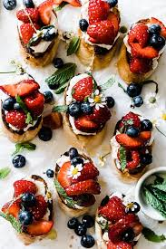

Berry Bruschetta

Description
Sometimes you just need something lite to eat, that doesn't make you unable to move. But obviously it should still be delicious and easy to make
These Berry Bruschettas are all that and they also look good!
Ingredients
- 2 Baguettes, cut in 1,5cm thick slices
- 2 tbs olive oil
- 200g Strawberries
- a handful of blueberries
- 125g Feta
- a bit of balsamic vinegar
Steps
- slightly drizzel the bread slices with olive oil. Pop them in the ofen at 200C to bake golden brown
- Take out of the oven and let coole down. Meanwhile cut the strawberries and blueberries in slices and crumble the feta
- Spread the strawberries and blueberries on the bread and top with feta
- Drizzle with balsamic vinegar and serv. Done!
Home